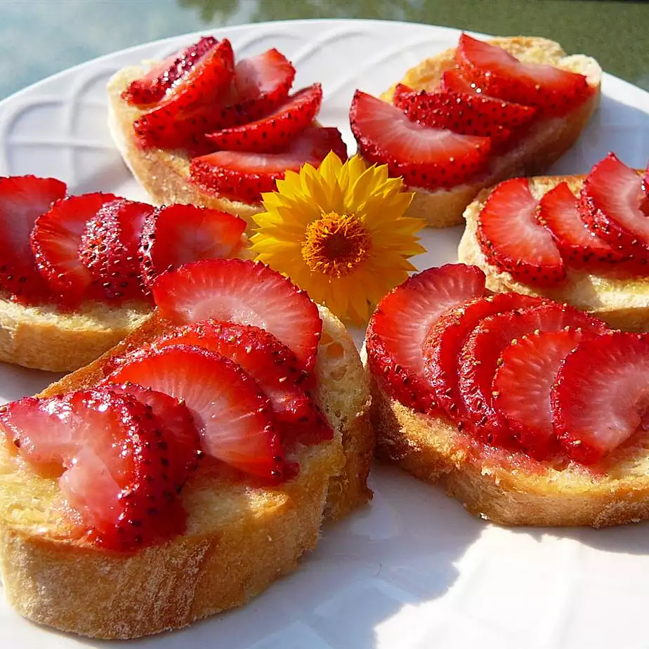

Strawberry Bruschetta

Description
This strawberry bruschetta is the perfect summer appetizer! Made with juicy strawberries, fresh basil and balsamic vinegar, it's delicious,
refreshing, and easy to make!
Ingredients
- 24 slices French baguette
- 1 tablespoon butter, softened
- 2 cups chopped fresh strawberries
- ¼ cup white sugar, or as needed
Steps
- Preheat your oven's broiler. Spread a thin layer of butter on each slice of bread. Arrange bread slices in a single layer on a large baking sheet.
- Place bread under the broiler for 1 to 2 minutes, just until lightly toasted. Spoon some chopped strawberries onto each piece of toast, then sprinkle
sugar over the strawberries.
- Place under the broiler again until sugar is caramelized, 3 to 5 minutes. Serve immediately.